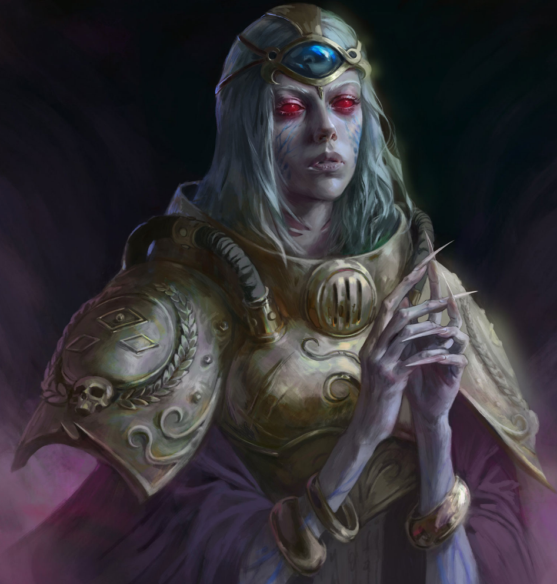

Dossier Archivistique 448.M41
Les Navigateurs ne sont pas des soldats. Ils ne sont pas non plus des savants au sens commun. Ils sont une nécessité. Une anomalie tolérée, protégée et surveillée, car sans eux, l’Imperium s’effondrerait en silence.
Nés au sein de lignées anciennes, altérées par des mutations anciennes et soigneusement entretenues, les Navigateurs possèdent un troisième œil. Non pas un organe symbolique, mais une excroissance psychique réelle, capable de percevoir les courants du Warp là où les humains ordinaires ne voient que néant et folie.

FONCTION IMPÉRIALE
Grâce à ce don, ils guident les vaisseaux à travers l’Immaterium. Sans eux, les flottes dériveraient au hasard, perdues dans une mer où le temps se tord et où les distances mentent. Chaque saut Warp deviendrait un acte suicidaire.
Leur perception du Warp n’est pas une simple lecture. C’est une lutte constante contre des forces qui cherchent à être vues. Chaque regard prolongé dans cette dimension expose le Navigateur à des entités qui observent en retour.
L’Astronomican, lumière psychique émise depuis Terra, constitue leur unique repère stable. Une balise dans une obscurité mouvante. Sans cette lumière, même les Navigateurs les plus expérimentés deviennent vulnérables.
Pourtant, malgré leur importance vitale, ils ne sont jamais pleinement intégrés à l’Imperium. Ils vivent au sein de maisons fermées, puissantes, jalouses de leurs secrets et de leur sang. Leur loyauté est maintenue par intérêt, tradition et nécessité.
DOGME ET DEVOIR
Leurs corps portent les marques de leur don. Déformations, altérations, mutations visibles ou dissimulées. Ce qui les rend capables de voir le Warp les éloigne irrémédiablement de l’humanité normale.
À bord des vaisseaux, ils sont à la fois indispensables et craints. Respectés par les officiers. Redoutés par l’équipage. Car chacun sait qu’un Navigateur instable peut condamner un bâtiment entier.
Une erreur de trajectoire dans le Warp n’est pas une simple déviation. C’est une disparition. Une arrivée dans un temps qui n’est pas le bon. Ou une ouverture involontaire vers quelque chose qui n’aurait jamais dû être approché.
Les Navigateurs ne combattent pas directement. Mais sans eux, aucune guerre impériale ne peut être menée à grande échelle. Ils sont les gardiens des routes invisibles. Les passeurs entre les étoiles.
HÉRITAGE AU SERVICE DU TRÔNE
Leur existence rappelle une vérité que beaucoup préfèrent ignorer. L’Imperium dépend de ce qu’il ne comprend pas entièrement. Et ce qu’il ne comprend pas peut, à tout moment, se retourner contre lui.
Toute défaillance d’un Navigateur doit être traitée immédiatement. Isolement. Surveillance. Si nécessaire, élimination. Car dans le Warp, une seule erreur suffit.
Fin de l’extrait. Sans Navigateurs, l’Imperium est aveugle. Avec eux, il n’est que partiellement guidé.